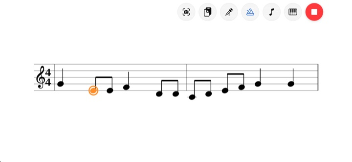
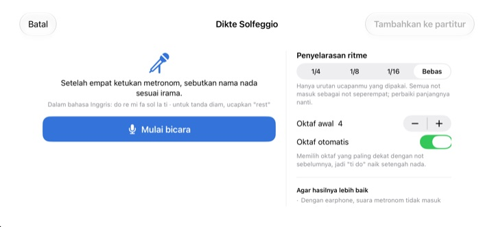
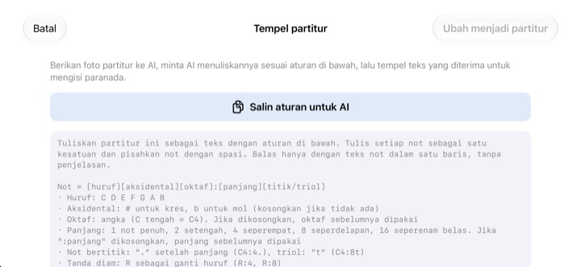

Berhenti menghitung di kepala.
Dengarkan saja.
Salin dua birama yang bikin bingung ke paranada, lalu ketuk putar. Setelah hitungan masuk satu birama, aplikasi memainkannya mengikuti metronom, dengan ritme dan nada yang tepat.
Semua fitur gratis. Untuk iPhone dan iPad.

Tulis beberapa not, lalu dengarkan
Tekan dan tahan paranada, geser ke atas atau bawah untuk mengganti nada, lalu lepas untuk menaruh not. Tekan putar untuk mendengarnya setelah hitungan masuk satu birama. Ada suaranya, jadi cek volume dulu.
Hitungan buyar lagi di tengah birama?
Not 1/8 bertitik, lalu 1/16, disusul triol. Menghitung sambil mengetuk lutut, lama-lama meleset juga. Malam sebelum latihan paduan suara pun sering tidak ada piano di dekat Anda. Dengan StaffSinger, cukup salin dua birama itu ke paranada dan dengarkan ritme serta nadanya dengan tepat.
Ritme dan nada persis seperti tertulis
Setelah hitungan masuk satu birama, musik dimainkan mengikuti klik metronom dan not yang sedang berbunyi ditandai oranye. Atur tempo dari 40 sampai 200 BPM dan pilih sukat 4/4, 3/4, 2/4, 6/8, 2/2, atau 3/8.
Tumpuk not pada ketukan yang sama untuk akord yang berbunyi bersamaan, dan tulis hingga tiga suara terpisah. Kunci G, kunci C (alto), kunci F, dan tanda kunci juga tersedia.

Ucapkan nama not, jadilah not
Setelah empat ketukan metronom, ucapkan do re mi sesuai ketukan dan not langsung masuk ke paranada. Ucapkan tepat di ketukan, maka panjang not ikut tercatat sebagai 1/4, 1/8, atau 1/16. Untuk tanda diam, ucapkan rest.
Ucapkan nama not dengan lafal bahasa Inggris. Suara dikenali hanya di perangkat dan tidak disimpan.

Foto partitur untuk AI, hasilnya tinggal tempel
Ketuk Salin aturan untuk AI, berikan ke AI bersama foto partitur Anda, lalu tempel teks yang dikembalikannya. Paranada langsung terisi. Formatnya ada di tabel di bawah.
Anda juga bisa memotret partitur kertas, menampilkannya di layar, lalu menyalinnya sambil melihat.

Mulai dalam tiga langkah
- 1
Pilih birama yang sulit
Aplikasi terbuka dengan paranada dua birama yang kosong.
- 2
Tulis notnya
Tekan paranada atau mainkan tuts piano.
- 3
Ketuk putar
Hitungan masuk, lalu diputar bersama metronom.
Format teks untuk ditempel
- C4:4
- C di oktaf 4, not 1/4 (C tengah adalah C4)
- D:8
- Tanpa oktaf, oktaf sebelumnya dipakai lagi
- F#4:8 · Bb4:4
- # untuk kres, b untuk mol
- E4
- Tanpa :panjang, panjang sebelumnya dipakai lagi
- :1 · :2 · :4 · :8 · :16
- not penuh, 1/2, 1/4, 1/8, 1/16
- C4:4.
- not bertitik
- C4:8t
- triol
- R:4 · R:8
- tanda diam
Salin aturan untuk AI di aplikasi menyalin petunjuk format ini apa adanya. Pisahkan not dengan spasi.
Semua fitur gratis
Gratis
- Input paranada dan keyboard piano dua oktaf
- Pemutaran dengan hitungan masuk dan metronom
- Akord dan tiga suara
- Tanda kunci dan tiga jenis kunci
- Dikte nama not dengan suara
- Tempel teks dan foto referensi
Dukung pengembang
- Kirim tip kecil dari Pengaturan
- Tip tidak membuka fitur tambahan
Bukan langganan. Setiap tip adalah pembayaran sekali.
Tanpa iklan, tanpa perlu akun.
Pertanyaan umum
Bagaimana cara menambahkan not?
Pilih nilai not di bilah alat dulu, lalu tekan paranada di nada yang Anda mau. Selama ditahan, nadanya terdengar, dan not masuk saat Anda melepas. Ketuk tombol keyboard untuk memasukkan not lewat keyboard piano dua oktaf.
Bagaimana membuat akord?
Nyalakan tombol Akord di bilah alat lalu tambahkan not. Not baru ditumpuk di atas not yang dipilih dan berbunyi bersamaan.
Saya ingin memperbaiki not.
Seret not ke atas atau bawah untuk mengubah nada, ke samping untuk memindahkan ketukan. Dengan not terpilih, tombol ♯ ♭ menggeser setengah nada dan tombol 8va menggeser satu oktaf.
Di mana mengubah tempo dan sukat?
Di Pengaturan, bersama kunci dan tanda kunci. Metronom dan hitungan masuk juga dinyalakan atau dimatikan di sana.
Tidak ada suara.
Periksa mode senyap dan volume media. Kalau hanya metronom yang tidak terdengar, pastikan Metronom menyala di Bantuan pemutaran pada Pengaturan.
Dikte nama not sering meleset.
Pakai earphone supaya bunyi metronom tidak masuk ke mikrofon, dan ucapkan satu not dengan jelas di setiap ketukan. Not yang salah tinggal diseret untuk diperbaiki.
Kenapa perlu kamera?
Hanya untuk memotret partitur kertas sebagai foto referensi di layar. Foto tidak pernah keluar dari perangkat. Tanpa izin kamera pun Anda bisa memilih foto dari galeri.
Perangkat apa yang didukung?
iPhone dan iPad dengan iOS 17 atau lebih baru. Tampilannya dirancang untuk posisi lanskap.
Apakah partitur atau suara saya dikirim ke mana pun?
Tidak. Partitur, foto, dan suara tetap di perangkat, dan semuanya bisa dipakai tanpa internet. Hanya statistik penggunaan anonim dan laporan crash yang dikirim ke iCloud untuk memperbaiki aplikasi.
Bagaimana cara menghubungi pengembang?
Kirim email ke leeo@kakao.com. Biasanya dibalas dalam 2 sampai 3 hari kerja. Laporan bug dan usulan fitur juga bisa dikirim sebagai issue di GitHub M1zz/StaffSinger.
Ada pertanyaan atau masukan? Tulis ke leeo@kakao.com.